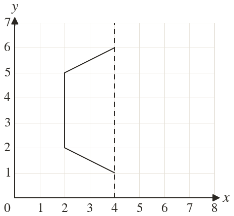
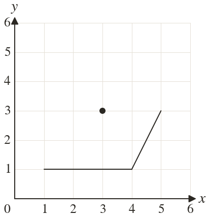
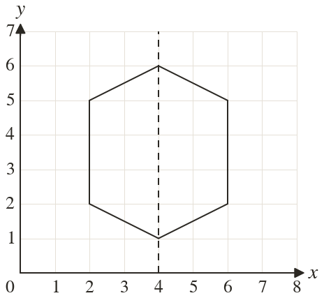
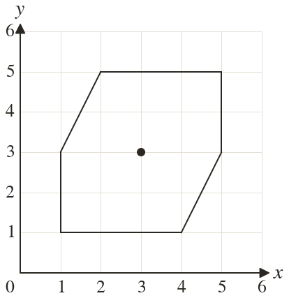

Westonbirt Maths · Transformations and Enlargements
Translations and Symmetry
Name: ______________________ Date: ____________
1
Complete the shape so that is a line of symmetry. Write down the new corners.
2
The shape has rotational symmetry of order about Complete it and write down its other corners.
3
The line is a line of symmetry. A corner is at Where is its partner?
4
A shape has order about One corner is at Which point must also be a corner?
5
The corners and are partners in a line of symmetry. Find the equation of the line.
Ext
A shape has and as lines of symmetry. One corner is Find three more corners, and the order of rotational symmetry.



